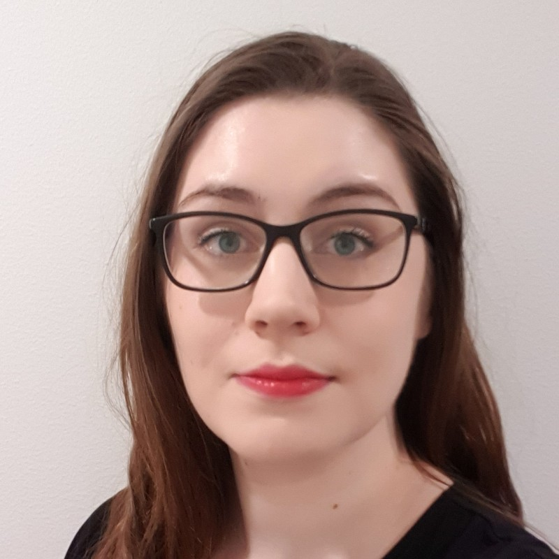

FL Pohjankoski


| 2022 alkaen | kätilö-sairaanhoitaja |
HUS Naistentautien vastaanotot |
| 2022 | kätilö | HUS äitiyspoliklinikka |
| 2021 | hallituksen jäsen | METKA opiskelijakunta | 2020 | edustajiston jäsen | METKA opiskelijakunta |
| 2020 | kampuksen tutorvastaava | METKA opiskelijakunta |
| 2020 | opiskelijatutor | METKA opiskelijakunta |
| 2019-2021 | hallituksen jäsen | TXO ry hoitotyön alojen opiskelijayhdistys |
Olin kätilöopintojen aikana aktiivisesti mukana opiskelija-aktiivi toiminnassa. Opiskelijayhdistykseni hallituksessa olin hallituskaudesta riippuen useassa eri tehtävässä; mm. markkinointi- ja yritysyhteistyövastaavana, sekä kansainvälisyysvastaavana.
Opiskelijakunta METKAn toiminnassa aloitin ensin vertais- ja vaihto-oppilastutorina, jonka jälkeen minut valittiin koulutettavaksi tutorvastaavaksi. Tutorvastaavana olin osa tiimiä, jonka tehtävänä oli koordinoida kotikampukseni tutoreiden toimintaa.
METKAn edustajistossa tehtäväni oli edustaa alani opiskelijoita opiskelijakunnan päätöksenteossa. METKAn hallituksessa vastasin koko opiskelijakunnan tutoroinnin koordinoimisesta ja koulutuksen järjestämisestä; toimin esihenkilönä noin 30 tutorvastaavalle. Tutorvastaavien alla toimi noin 200 tutoria vuodessa.